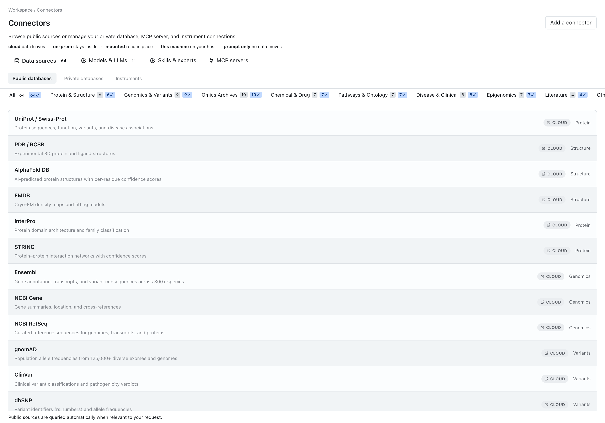
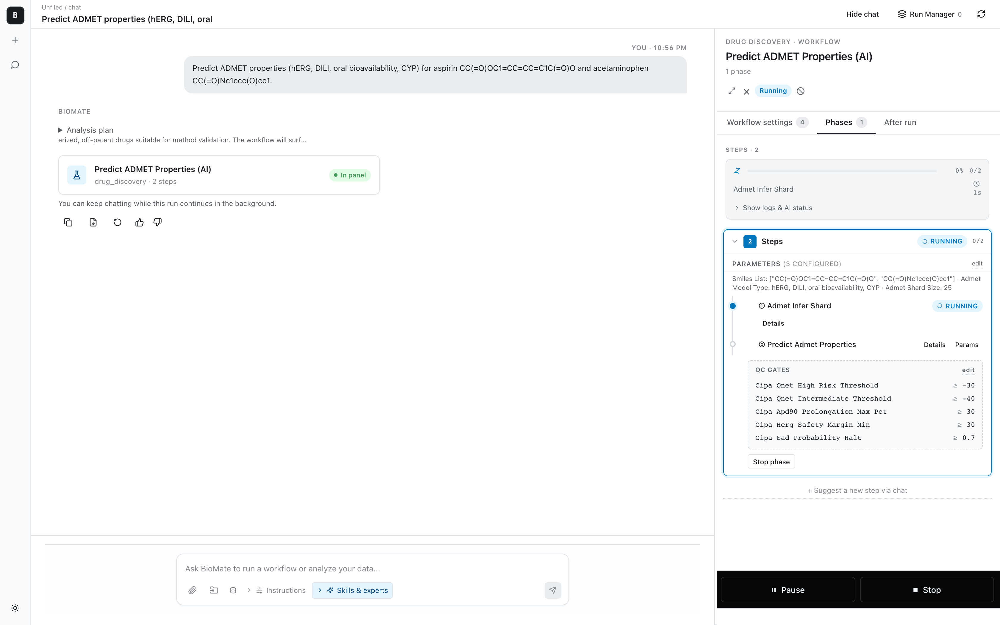
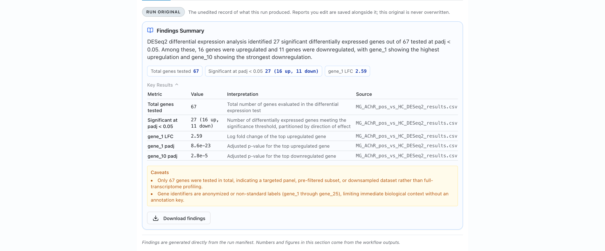

从任意仪器与数据，到可复现、可决策的结果。
任意生物信息任务的检索、运行与结果解读，都在同一工作台完成。
为测序仪、流式、液质、酶标仪、冷冻电镜、移液机器人及 ELN/LIMS 提供真实连接器。
文献、数据库与 4,210 个工作流目录，智能路由到正确的方法。
云端（AWS Batch / Nextflow）或本地部署，带质控门与从每轮运行中学习的闭环。
数据不出域；确定性执行；结果可版本化、可溯源。
同一个闭环，贯穿每一个领域。
BioMate 不替代 R 的方法——而是运行它们。其 1,000+ 工作流本身就是 Bioconductor/R（DESeq2、limma、edgeR、Seurat、flowCore、survival）。它替代的是你围绕这些方法自行搭建与维护的一切。
诚实边界：对于做定制化、全新分析的资深生物信息专家，原生 R 更灵活——BioMate 的价值在于面向非编程用户、可复现与合规、规模化与方法路由。

用自然语言描述目标，BioMate 从 4,210 个工作流中选择并解释原因。
粘贴编号，自动识别模态并匹配流程。
基于证据的文献问答，真实引用——不编造参考文献。
活性/SAR、结构与相似性检索；适用领域的 FTO/专利。


本地/私有化部署为默认；计算在自有环境内完成。
可在自有数据上训练与微调。
同一输入在推理阶段得到一致输出。
评分以公式与解释列呈现，证据来源可追溯。
探索在演化层完成，线上执行已接受版本，变更留有记录。
按团队/项目/人员授权；与 ELN / 化合物库 / LIMS 双向打通。
一个平台替代多套单点软件；减少计算外包；先试点后全量，减少无效运行。
质控门与自动循环减少返工。
结果回写到你的系统。
运行、质控与专家纠正沉淀为可审计的知识。
